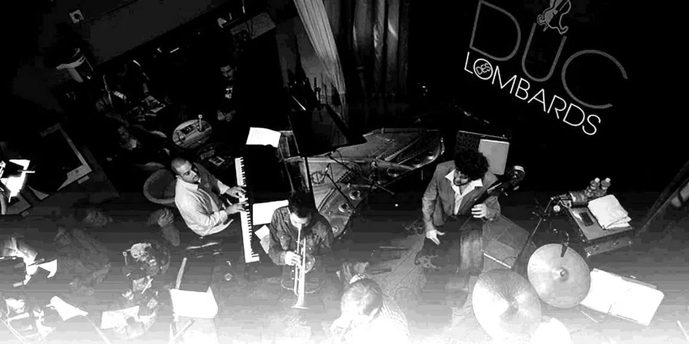

Bar
Au-delà du jazz, le Duc sert des vins, champagnes, whiskies, cocktails et jus de fruits choisis chez des vignerons, producteurs et négociants passionnés. L’idée : accorder une improvisation au piano et un grand vin.

Prix nets TTC, service compris. Prix au verre et à la bouteille sur la carte complète (PDF, 161 Ko). L’abus d’alcool est dangereux pour la santé, à consommer avec modération.
Champagne Dehours et Fils
La cuvée « Grande Réserve » Brut, à la carte du club : un champagne d’exception, à l’apéritif.
Le domaine cultive son vignoble familial dans le respect de la biodiversité : travail mécanique des sols, enherbement naturel entre les rangs. Les vins vieillissent sur lies totales et sont clarifiés par décantation naturelle, sans collage ni filtration.
Majoritairement meunier, cépage roi de la vallée de la Marne, la Grande Réserve assemble une large part de vins de réserve issus d’une solera commencée en 1998. Fermentation malolactique complète, 15 à 27 mois de maturation en bouteille.